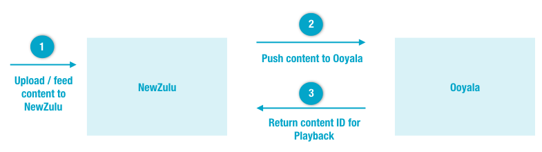

The Ooyala integration with NewZulu's FileMobile and Media Factory
products allow users to seamlessly combine NewZulu's content collection, curation,
and workflow capabilities with Ooyala analytics, advertising, and video
services.
About Ooyala-NewZulu Integration
NewZulu's FileMobile product provides desktop and mobile users with an easy to use,
responsive video upload and integrated playback experience. Once integration is set
up:

- NewZulu ingest. Users upload videos and other files via widgets (such as
their Uploader widget) and APIs to NewZulu's Media Factory. Media
Factory also collects streamed content (live streams, social media, RSS, and so
on).
- Ooyala Ingest. Media Factory provides configurable workflow capabilities
to push collected content (along with any associated metadata) to the Ooyala
platform via Ingesting with FTP / FTPS. Users can configure
trigger options to push content to Ooyala automatically, to push only reviewed
and approved content, or to send moderated content individually. In addition to
standard metadata (for example, information about the user who uploaded the
content), Media Factory can pass on custom metadata.
- Content ID for Playback. Once ingested, Ooyala returns the asset's
external content ID to Media Factory. This reference allows for interactive
playback of the content using NewZulu widgets (such as their Gallery Widget) or their API.
Integration Setup Instructions
To set up integration, you'll
need:
- an Ooyala account
- a NewZulu account
In
Media Factory, you will need to configure how to push content to
Ooyala. This
requires:
- your Ooyala account information (login credentials, API key, and API
secret)
- FTP configuration settings
Refer to the
NewZulu's integration instructions
for setup details. For more information about
NewZulu products, refer to their
Developer Documentation Portal.
Integration Technical Support
For technical support of Ooyala-NewZulu integrations:
| Contact |
For |
| NewZulu Technical Support |
Issues associated with NewZulu widgets, APIs, and Media
Factory, including content uploads and collection, curation,
approvals, workflow, and push to the Ooyala platform. |
| Ooyala Customer Portal. |
Post-publishing issues, including video playback and quality,
Ooyala analytics, and ad serving. |